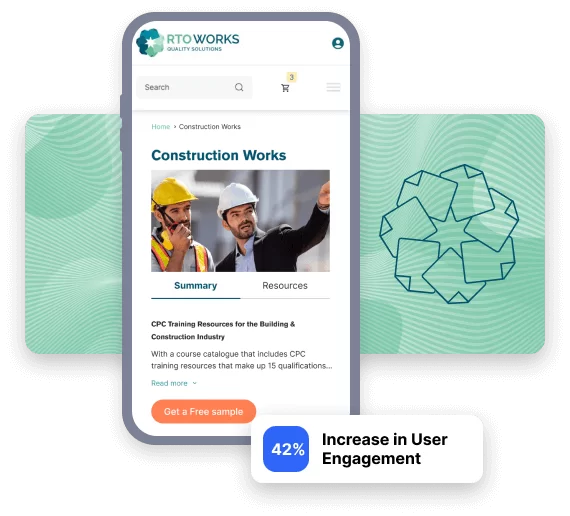
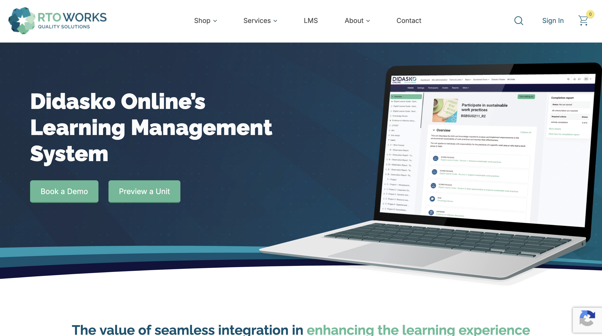

RTO Works
How We Increased RTO Works’ Phone Enquires By 27%
Overview
RTO Works is the trusted partner for RTO compliance and learning resources, supporting VET providers for over 20 years. With expert advice and online tools, they help RTOs manage and reduce compliance risk while building high-quality training programs across multiple industries.
However, their website was becoming a liability. Their outdated website design was damaging brand perception and impacting their SEO and PPC campaigns. Meanwhile, a clunky and restrictive backend made it difficult to implement changes.


Key Challenges
1. Performance Issues Hurting SEO, PPC & Brand Reputation
Their website speed was impacting search rankings, increasing ad costs, and frustrating users. The backend was inflexible, making even simple updates tedious and time-consuming.
2. Outdated Design & Lack of Storytelling
Their website didn’t effectively showcase their expertise or guide users toward a clear goal or action, which led to missed opportunities to convert visitors into leads.
Our Solutions & Process
Bringing our design, coding and marketing brains together, we were able to transform RTO’s SEO & PPC campaigns, front-end user experience and website backend, all under one roof. Here’s how we did it.
1. Hosting Migration & Phased Website Optimisation
Moved their website to a high-performance WordPress hosting solution, immediately improving page load times.
2. Deep technical audit
We determined their existing backend structure wouldn’t support sustained speed improvements, and their current design wasn’t optimised for conversions.
So we proposed a phased redesign and redevelopment plan to achieve 90+ Desktop / 60+ Mobile page speed scores without disrupting business operations.
3. Data-Driven Redesign & Storytelling for Higher Conversions
> Refreshed the website with a modern look based on real user data, weaving in storytelling to better connect with visitors.
> Improved backend flexibility, allowing website admins to make updates quickly and test changes without hassle.
> Optimised site structure for SEO, leading to better user engagement and increased conversions over time.
4. Ongoing Redesign & Business Optimisation
A full-scale redevelopment is in progress, designed to not only increase sales but also reduce repetitive administrative tasks, freeing up the team to focus on growth.

The Bottom Line
RTO Works now has a website that supports their growth, instead of blocking it. Combination of marketing and technical expertise, we were able to deliver a complete solution, from technical SEO for better reach, redesign and content for improved conversions, and an overhauled website backend that makes it easy for marketing teams to make updates.